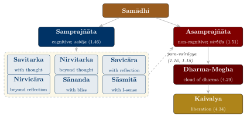
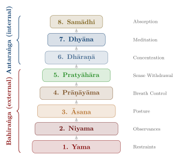
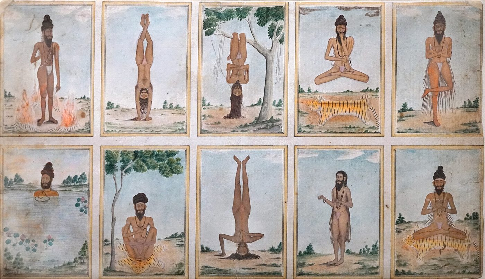
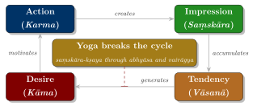

Chapter 2: Patañjali’s Yoga Sūtra and the Eight Limbs¶
Traditional invocation to Patañjali (a late verse, found in an 18th-century work by Śivarāma)
yogena cittasya padena vācāṃ
malaṃ śarīrasya ca vaidyakena
yo'pākarot taṃ pravaraṃ munīnāṃ
patañjaliṃ prāñjalir ānato'smi
I bow with folded hands to Patañjali, the foremost among sages,
who removed impurities of the mind through Yoga, of speech through Grammar,
and of the body through Medicine.
2.1 Patañjali and His Work¶
Patañjali did not invent Yoga. He systematised existing yogic teachings — Brahmanical, and in part Buddhist in vocabulary — into a compact work of 195 or 196 aphorisms (sūtras), whose terseness invites comparison with Pāṇini’s Aṣṭādhyāyī. Later tradition, in the invocation above, made him the author of three works that purify mind, speech and body: the Yoga Sūtra, the Mahābhāṣya on grammar and a lost medical treatise. Modern scholarship does not accept this attribution.
The dating of Patañjali has long been debated. The identification of the author of the Yoga Sūtras with Patañjali the grammarian (c. 150 BCE) would place him in the 2nd century BCE, but most modern scholars reject it on grounds of language and doctrine. Philipp Maas, who produced the first critical edition of the work’s first chapter (Maas 2006), has shown from the manuscript tradition that the sūtras and the Bhāṣya ascribed to “Vyāsa” were transmitted as one work, the Pātañjalayogaśāstra, which he dates to c. 325–425 CE; he argues that Patañjali compiled the sūtras and wrote the explanatory prose himself (Maas 2013). Not all scholars accept single authorship, but a date around the 4th–5th century CE for the work in its present form is now widely accepted. The text shows considerable familiarity with Sarvāstivāda and Yogācāra Buddhist ideas, and Karen O’Brien-Kop has argued that “classical” Yoga is best read as one participant in a shared Brahmanical and Buddhist discourse of meditation rather than as a self-contained system (Bryant 2009; White 2014; O’Brien-Kop 2021).
2.2 Structure of the Yoga Sūtras¶
The sūtras are divided into four chapters (pādas), each addressing a distinct aspect of the yogic path. (The count of 55 or 56 sūtras in the third chapter varies between editions; sūtra numbers cited below follow the common numbering of Woods’s translation (Woods 1914).) Table 2.1 gives the subject of each pāda. This chapter follows the four parts in turn, but treats the eight limbs, which run from the end of the second part into the third, together (Section 2.5).
| Pāda | Name | Sūtras | Subject Matter |
|---|---|---|---|
| I | Samādhi Pāda | 51 | Nature of Yoga; states of samādhi; obstacles |
| II | Sādhana Pāda | 55 | Practice; kleśas; Kriyā Yoga; first five limbs |
| III | Vibhūti Pāda | 56 | Supernatural powers (siddhis); last three limbs |
| IV | Kaivalya Pāda | 34 | Absolute liberation; nature of consciousness |
2.3 Pāda I: Samādhi Pāda — The Chapter on Absorption¶
Later commentators held that the first chapter is addressed to the student who is already advanced in practice. It defines Yoga, describes the modifications of the mind, names the obstacles and their remedies, and presents the stages of samādhi.
2.3.1 The Opening Sūtras: Definition of Yoga¶
Sūtra 1.1
atha yogānuśāsanam
Now begins the authoritative instruction on Yoga.
Vyāsa’s Bhāṣya explains that atha (“now”) marks the beginning of a topic (adhikāra), and glosses the word yoga as concentration (samādhi).
Sūtra 1.2 — The Definition
yogaś citta-vṛtti-nirodhaḥ
Yoga is the cessation of the fluctuations of the mind-stuff.
This is the defining sūtra (lakṣaṇa sūtra). Citta is the whole mental apparatus — in the commentators’ terms, the Sāṃkhya mind, intellect and ego-sense together (Section 2.9); its vṛttis are its fluctuations or modifications; nirodha is their cessation or restraint.
Sūtra 1.3 — The Result
tadā draṣṭuḥ svarūpe'vasthānam
Then the Seer abides in its own true nature.
When the fluctuations of the mind cease, the Puruṣa (the Seer, draṣṭā) rests in its own nature; when they do not, it seems to take on their form (vṛtti-sārūpyam itaratra, 1.4).
2.3.2 The Five Vṛttis¶
Sūtra 1.5–1.6
vṛttayaḥ pañcatayyaḥ kliṣṭākliṣṭāḥ
pramāṇa-viparyaya-vikalpa-nidrā-smṛtayaḥ
The fluctuations are fivefold, and may be painful (kliṣṭa) or non-painful (akliṣṭa).
They are: valid cognition, error, imagination, sleep, and memory.
Each of the five may be painful or not; Table 2.2 gives the sūtra that defines each.
| Vṛtti | English | Description | Sūtra |
|---|---|---|---|
| Pramāṇa | Valid cognition | Correct knowledge through perception, inference, or testimony | 1.7 |
| Viparyaya | Error | Misconception; knowledge not based on the real form of the object | 1.8 |
| Vikalpa | Imagination | Verbal cognition without a corresponding object | 1.9 |
| Nidrā | Sleep | The modification based on the absence of content | 1.10 |
| Smṛti | Memory | Retention of experienced objects | 1.11 |
2.3.3 Abhyāsa and Vairāgya¶
Sūtra 1.12
abhyāsa-vairāgyābhyāṃ tan-nirodhaḥ
The cessation of the fluctuations is achieved through practice (abhyāsa) and dispassion (vairāgya).
Sūtra 1.13–1.14
tatra sthitau yatno'bhyāsaḥ
sa tu dīrgha-kāla-nairantarya-satkārāsevito dṛḍha-bhūmiḥ
Of these, abhyāsa is the effort to maintain steadiness.
That practice becomes firmly grounded when pursued for a long time, without interruption, and with devotion.
The three conditions of firm practice — long duration (dīrgha-kāla), continuity (nairantarya) and care or reverence (satkāra) — are the nearest the sūtras come to a programme of training. Dispassion is defined next (1.15–1.16): the lower kind is mastery over craving for things seen or heard of; the higher (para-vairāgya) is indifference even to the qualities of nature, which comes from knowledge of the Puruṣa.
2.3.4 Īśvara Praṇidhāna¶
One of the most distinctive features of Patañjali’s Yoga, compared with classical Sāṃkhya, is the inclusion of Īśvara (the Lord) as a special Puruṣa. Īśvara is not a creator; he is a self who has never been bound and who serves as teacher and object of meditation:
Sūtras 1.23–1.27
īśvara-praṇidhānād vā
kleśa-karma-vipākāśayair aparāmṛṣṭaḥ puruṣa-viśeṣa īśvaraḥ
tatra niratiśayaṃ sarva-jña-bījam
pūrveṣām api guruḥ kālenānavacchedāt
tasya vācakaḥ praṇavaḥ
Or, (samādhi is attained) by devotion to Īśvara.
Īśvara is a special Puruṣa, untouched by afflictions, actions, results, or latent impressions.
In Him is the unsurpassed seed of omniscience.
He is the Guru even of the ancients, being not limited by time.
His designator (name) is the Praṇava (Oṃ).
The next sūtra prescribes the repetition of this syllable together with contemplation of its meaning (1.28; Chapter 10).
2.3.5 The Obstacles and Their Remedies¶
The first chapter also analyses what stands in the way of practice:
Sūtra 1.30
vyādhi-styāna-saṃśaya-pramādālāsyāvirati-
bhrānti-darśanālabdha-bhūmikatvānavasthitatvāni
citta-vikṣepās te'ntarāyāḥ
Disease, dullness, doubt, carelessness, laziness, worldliness, erroneous perception, failure to attain a stage, and instability — these are the distractions of the mind that are the obstacles.
Pain, dejection, trembling of the limbs and irregular breathing accompany these distractions (1.31). Table 2.3 gives Vyāsa’s explanation of each obstacle.
| Obstacle | English | Description (following Vyāsa) |
|---|---|---|
| Vyādhi | Disease | Imbalance of the bodily humours, fluids and senses |
| Styāna | Dullness | Mental inertia; unwillingness to act |
| Saṃśaya | Doubt | Wavering between alternatives |
| Pramāda | Carelessness | Failure to cultivate the means to samādhi |
| Ālasya | Laziness | Heaviness of body and mind |
| Avirati | Worldliness | Craving for sense objects |
| Bhrānti-darśana | False perception | Mistaken understanding |
| Alabdha-bhūmikatva | Non-attainment | Failure to reach a stage of concentration |
| Anavasthitatva | Instability | Inability to hold an attained stage |
Patañjali’s own remedy is practice on a single principle (eka-tattvābhyāsa, 1.32). He then offers a series of alternatives for steadying the mind: cultivating friendliness, compassion, joy and equanimity towards the happy, the suffering, the virtuous and the wicked (1.33, discussed as a meditation practice in Chapter 9); the expulsion and retention of breath (1.34); engagement of the mind with a subtle sense-experience (1.35); a luminous state free of sorrow (1.36); a mind free from passion, such as that of a saint (1.37); the knowledge of dream or deep sleep (1.38); and, finally, meditation on any object one likes (1.39). The list is notably open: no single technique is required, and a range of supports is offered for people of different temperaments.
2.3.6 The Stages of Samādhi¶
This is the book’s one full treatment of the stages of samādhi; the chapters on Haṭha Yoga and on meditation refer back to it. Patañjali distinguishes two kinds of absorption. Cognitive (samprajñāta) absorption is accompanied by gross thought (vitarka), subtle reflection (vicāra), bliss (ānanda) and the bare sense “I am” (asmitā) (1.17); the other kind, reached through supreme dispassion (para-vairāgya, 1.16) and the practice of the idea of cessation, retains only latent impressions (1.18).
Sūtras 1.41–1.51 analyse cognitive absorption as a series of “coalescences” (samāpatti) of the mind with its object, which become progressively simpler. In savitarka absorption the object is still mixed with its name and with the idea of it (1.42); when memory is purified, the object alone shines forth (nirvitarka, 1.43). The same two steps are then repeated with subtle objects (savicāra, nirvicāra, 1.44). All of these are “with seed” (sabīja, 1.46). At the highest of them the mind becomes so clear that its insight is called “truth-bearing” (ṛtaṃbharā prajñā, 1.48), and the impression left by that insight blocks all other impressions (1.50). When even this impression is stopped, the absorption is “seedless” (nirbīja, 1.51). The commentators, from Vyāsa onwards, built these sūtras into a ladder of six cognitive stages leading to the non-cognitive state; Vācaspati Miśra’s systematisation of that ladder is the one usually taught today (Figure 2.1; Table 2.4). The final stage before liberation, the “cloud of dharma” (dharmamegha), is described in the fourth chapter (Section 2.7).

| Stage | Type | Object | Characteristics |
|---|---|---|---|
| Savitarka | Cognitive | Gross | Absorption with name, form, and knowledge mixed |
| Nirvitarka | Cognitive | Gross | Only the object’s essential nature shines |
| Savicāra | Cognitive | Subtle | Absorption on subtle elements with reflection |
| Nirvicāra | Cognitive | Subtle | Truth-bearing insight (ṛtaṃbharā prajñā) |
| Sānanda | Cognitive | Sattvic joy | Absorption in pure bliss |
| Sāsmitā | Cognitive | Pure ego | Only the sense of “I am” remains |
| Asamprajñāta | Non-cognitive | None | Cessation of all mental activity; seedless |
2.4 Pāda II: Sādhana Pāda — The Chapter on Practice¶
According to the commentators, the second chapter is addressed to the student of intermediate qualification who requires practical guidance. It introduces Kriyā Yoga, analyses the causes of suffering (kleśas), and begins the account of the eight limbs.
2.4.1 Kriyā Yoga: The Yoga of Action¶
Sūtra 2.1
tapaḥ-svādhyāyeśvara-praṇidhānāni kriyā-yogaḥ
Austerity (tapas), self-study (svādhyāya), and surrender to Īśvara (īśvara-praṇidhāna) constitute Kriyā Yoga.
Kriyā Yoga is practised, the next sūtra says, to cultivate samādhi and to weaken the afflictions (2.2). The same three practices reappear as the last three observances (niyama) of the eight-limbed path (Section 2.5.2), and the commentators read Kriyā Yoga as the yoga of those not yet fit for the higher practices of the first chapter.
2.4.2 The Five Kleśas (Afflictions)¶
Sūtra 2.3
avidyāsmitā-rāga-dveṣābhiniveśāḥ kleśāḥ
The afflictions are: ignorance, egoism, attachment, aversion, and clinging to life.
Table 2.5 summarises the five.
| Kleśa | English | Description | Sūtra |
|---|---|---|---|
| Avidyā | Ignorance | Mistaking the non-eternal for eternal, impure for pure, painful for pleasant, non-Self for Self | 2.5 |
| Asmitā | Egoism | Identification of the Seer with the instrument of seeing | 2.6 |
| Rāga | Attachment | Clinging to pleasure | 2.7 |
| Dveṣa | Aversion | Recoiling from pain | 2.8 |
| Abhiniveśa | Fear of death | Clinging to life, present even in the wise | 2.9 |
Sūtra 2.4 — Avidyā as the Root
avidyā kṣetram uttareṣāṃ prasupta-tanu-vicchinnōdārāṇām
Ignorance is the field for the others, whether they be dormant, attenuated, alternating, or fully active.
Because ignorance is the field in which the others grow, the analysis has a single point of attack. Egoism arises because the instrument of seeing is mistaken for the seer; attachment and aversion follow the pleasant and the painful; and the fear of death comes from identifying the self with the mortal body. Remove ignorance, and the other afflictions lose their ground. The means of removing it is named a little later:
Sūtra 2.26
viveka-khyātir aviplavā hānopāyaḥ
The means of liberation (hāna-upāya) is unbroken discriminative discernment (viveka-khyāti).
Viveka-khyāti is not intellectual analysis but a direct perception of the difference between the Seer (Puruṣa) and the seen (Prakṛti), the fruit of the truth-bearing insight of the higher samādhis. The eight limbs, to which the sūtras now turn, are presented as the practice that destroys impurity until this discernment shines forth (2.28).
2.5 The Eight Limbs (YS 2.28–3.8)¶
Yoga Sūtra 2.29
yama-niyamāsana-prāṇāyāma-pratyāhāra-dhāraṇā-dhyāna-samādhayo'ṣṭāv aṅgāni
Restraint, observance, posture, breath regulation, sense withdrawal,
concentration, meditation, and absorption — these are the eight limbs.
The aṣṭāṅga or eight-limbed yoga is the best-known framework of yogic practice in the Brahmanical tradition, and the one most often taken as normative in modern times. Aṅga means “limb” or “auxiliary”, not “step”: the eight are parts of a single discipline, and the ethical limbs are meant to be kept throughout. Patañjali himself divides them into two groups (YS 3.7–3.8). The first five are “external” (bahiraṅga); the last three are “internal” (antaraṅga), though they are in turn external in relation to seedless samādhi (Figure 2.2). B.K.S. Iyengar’s image of the limbs as the parts of a tree, from the root of yama to the fruit of samādhi, makes the same point for modern readers (Iyengar 1988).

2.5.1 Yama: The Restraints¶
Sūtra 2.30
ahiṃsā-satyāsteya-brahmacaryāparigrahā yamāḥ
Non-violence, truthfulness, non-stealing, continence, and non-possessiveness are the restraints.
When the restraints are kept without limitation of birth, place, time or circumstance, Patañjali calls them the “great vow” (mahāvrata, 2.31); Vyāsa’s example of a limited vow is the fisherman who harms only fish. Ahiṃsā comes first, and Vyāsa makes the others depend on it. He defines it as sarvathā sarvadā sarvabhūtānām anabhidrohaḥ, “the absence of injurious intent towards all living beings, in every way, at all times”, and adds that the other restraints and observances are practised to perfect it. Satya is speech and thought that accord with what has been seen, inferred or heard, spoken for the good of others; asteya is the absence of the wish to take what belongs to another; aparigraha is freedom from acquisitiveness.
Brahmacarya originally meant the life of a Vedic student (“one who moves in brahman”, that is, in Vedic study), which required chastity. In the Yoga Sūtra it means sexual continence: Vyāsa defines it as restraint of the sexual organ together with the other senses, and Patañjali was writing for renunciants. The Yoga Upaniṣads (for example the Śāṇḍilya) extend the definition to thought and word, and the Haṭha texts add a physiological reason, the preservation of semen (bindu). For the householder Dharmaśāstra prescribes not celibacy but marital fidelity. Many modern teachers reinterpret brahmacarya as moderation in general; that is a reading for lay practitioners, distinct from the ascetic meaning of the classical sources.
The sūtras then state what each restraint brings when it is firmly established (2.35–2.39): hostility ceases in the yogin’s presence; his words come true; jewels present themselves to him; he gains vigour (vīrya); and he knows the circumstances of his births. These are claims of the tradition; Vyāsa illustrates the first with natural enemies living peacefully near the sage.
2.5.2 Niyama: The Observances¶
Sūtra 2.32
śauca-saṃtoṣa-tapaḥ-svādhyāyeśvara-praṇidhānāni niyamāḥ
Purity, contentment, austerity, self-study, and surrender to the Lord are the observances.
Where the restraints govern the yogin’s dealings with others, the observances govern his own discipline. Śauca is both external purity, of the body and of food, and internal purity of mind; the first is said to bring disgust for one’s own body and disinclination for contact with others, the second cheerfulness, one-pointedness, mastery of the senses and fitness for the vision of the self (2.40–2.41). Santoṣa, contentment, yields unsurpassed happiness (2.42). Tapas, literally “heat”, is the endurance of the pairs of opposites — heat and cold, hunger and thirst — by which impurity is destroyed and the body and senses are perfected (2.43); the Bhagavad Gītā (17.14–16) distinguishes austerity of body, of speech and of mind. Svādhyāya is, for Vyāsa, the study of texts that lead to liberation or the repetition of Oṃ, and it brings contact with one’s chosen deity (2.44); the modern gloss “study of the self” extends the etymology (sva, “own”) rather than the classical meaning. Īśvara-praṇidhāna is, in Vyāsa’s words, the offering of all actions to the supreme teacher, and through it samādhi is perfected (2.45).
2.5.3 Āsana: The Seat¶
Sūtra 2.46
sthira-sukham āsanam
The posture should be steady and comfortable.
The word āsana literally means “seat” (from ās, “to sit”). In the Yoga Sūtra it is the seated posture in which the yogin remains for long periods of breath-control and meditation. Vyāsa names about a dozen such seats (lotus, hero, auspicious, staff and others); none is a standing or athletic posture (Figure 2.3). Perfection in posture comes from relaxing effort and from absorption in the infinite (2.47), and then the yogin is no longer troubled by the pairs of opposites (2.48). The very different āsana of Haṭha Yoga, and the long history by which “seat” became “posture”, are traced in Chapter 7.

_-_Flickr_-_dalbera.jpg){kind=link}
2.5.4 Prāṇāyāma: Regulation of the Breath¶
Sūtra 2.49
tasmin sati śvāsa-praśvāsayor gati-vicchedaḥ prāṇāyāmaḥ
That (āsana) being established, prāṇāyāma is the interruption of the flow of inhalation and exhalation.
For Patañjali, prāṇāyāma is not a set of breathing exercises but the stopping of breath movement. Sūtra 2.50 distinguishes three forms of this cessation, each to be measured by place, time and number until it becomes “long and subtle”; 2.51 adds a “fourth” that goes beyond the external and internal spheres; and 2.52–2.53 state its fruits: the covering of the inner light wears away and the mind becomes fit for concentration. These sūtras, Vyāsa’s explanation of them and the very different techniques of Haṭha Yoga are discussed in Chapter 8 (Section 8.9).
2.5.5 Pratyāhāra: Withdrawal of the Senses¶
Sūtra 2.54
sva-viṣayāsaṃprayoge citta-svarūpānukāra ivendriyāṇāṃ pratyāhāraḥ
Pratyāhāra is, as it were, the imitation by the senses of the mind’s own nature, when they withdraw from their objects.
Pratyāhāra is the hinge between the external and the internal limbs. Vyāsa compares the senses to bees that rise and settle with their king: when the mind is restrained, the senses follow it. The older image is the tortoise withdrawing its limbs into its shell (Bhagavad Gītā 2.58). From withdrawal comes supreme mastery over the senses (tataḥ paramā vaśyatendriyāṇām, 2.55). It is the limb least discussed in modern posture practice. Some Brahmanical and Haṭha yoga texts, such as the Yogayājñavalkya, give it a technical sense of their own, as the withdrawal of the breath from a series of vital points in the body.
2.5.6 Dhāraṇā, Dhyāna and Samādhi¶
The third chapter of the sūtras opens by defining the three internal limbs:
Sūtras 3.1–3.3
deśa-bandhaś cittasya dhāraṇā
tatra pratyayaikatānatā dhyānam
tad evārtha-mātra-nirbhāsaṃ svarūpa-śūnyam iva samādhiḥ
Dhāraṇā is the binding of the mind to a single location.
Dhyāna is the unbroken flow of cognition towards that object.
When that same (meditation) shines forth as the object alone, as if devoid of its own form — that is Samādhi.
In dhāraṇā the mind, withdrawn from external objects, is fixed on a chosen place (deśa). Vyāsa lists places in the body — the navel circle, the lotus of the heart, the light in the head, the tip of the nose and the tip of the tongue — and external objects; later traditions added images of the deity, flames, yantras and mantras. The mind still wanders and must be brought back. When the stream of attention (pratyaya) towards the object becomes continuous (ekatānatā), dhāraṇā has become dhyāna; later commentators compare it to oil poured in an unbroken stream from one vessel to another. The difference between the two is one of degree. (Some later Haṭha texts and Yoga Upaniṣads quantify it, making one unit of dhyāna equal to twelve of dhāraṇā; this is not found in Patañjali or Vyāsa.) In samādhi, finally, the object alone shines forth, and the mind is so absorbed in it that it seems empty of its own form. The texts do not describe this as unconsciousness or blankness: the sūtras compare the purified mind to a flawless jewel that takes on the colour of whatever is placed beside it (1.41), and the higher samādhis are states of heightened clarity in which the truth-bearing insight arises (Section 2.3.6). Meditation as a practice, with its objects and its Buddhist and Jain forms, is the subject of Chapter 9.
2.5.7 Saṃyama¶
Sūtras 3.4–3.5
trayam ekatra saṃyamaḥ
taj-jayāt prajñālokaḥ
The three (dhāraṇā, dhyāna, samādhi) together form Saṃyama.
By mastery of saṃyama, the light of wisdom dawns.
Practised together on a single object, the three internal limbs are called saṃyama. In Patañjali’s account saṃyama is the yogin’s instrument of knowledge: directed at any object, gross or subtle, it is said to reveal that object completely, and the powers of the third chapter arise from applying it to different objects (Section 2.6).
2.5.8 Other Schemes of Limbs¶
The eight-limbed system of Patañjali is not the only multi-limbed classification of Yoga in the Bhāratīya tradition. Several other texts present alternative schemes (Table 2.6).
| Limbs | Source | Period | Limbs Listed |
|---|---|---|---|
| 6 | Maitrī Upaniṣad | last centuries BCE (debated) | Prāṇāyāma, Pratyāhāra, Dhyāna, Dhāraṇā, Tarka, Samādhi |
| 8 | Yoga Sūtras | c. 325–425 CE | Yama, Niyama, Āsana, Prāṇāyāma, Pratyāhāra, Dhāraṇā, Dhyāna, Samādhi |
| 6 | Vivekamārtaṇḍa / Gorakṣaśataka | 13th–14th c. CE | Āsana, Prāṇāyāma, Pratyāhāra, Dhāraṇā, Dhyāna, Samādhi |
| 4 | Haṭha Yoga Pradīpikā | c. 1450 CE | Āsana, Kumbhaka (Prāṇāyāma), Mudrā, Nādānusandhāna (as its four chapters) |
| 15 | Aparōkṣānubhūti (attrib. Śaṅkara) | medieval | Vedāntic reinterpretation: yama, niyama, tyāga, mauna, deśa, kāla, āsana, mūlabandha, dehasāmya, dṛk-sthiti, prāṇasaṃyamana, pratyāhāra, dhāraṇā, ātmadhyāna, samādhi |
| 7 | Gheraṇḍa Saṃhitā | c. 1700 CE | Ṣaṭkarma, Āsana, Mudrā, Pratyāhāra, Prāṇāyāma, Dhyāna, Samādhi |
The differences are instructive. The Maitrī Upaniṣad’s six-limbed system, which reappears in the Śaiva Tantras (Chapter 5), omits yama, niyama and āsana. The Gheraṇḍa Saṃhitā replaces the ethical limbs with ṣaṭkarma and mudrā, reflecting the Haṭha emphasis on physical purification. The Haṭha Yoga Pradīpikā’s four chapters treat āsana, prāṇāyāma, mudrā and nāda as the pillars of practice; the six-limbed Haṭha texts drop yama and niyama altogether, and the Dattātreyayogaśāstra declares that anyone who practises — brahmin, ascetic, Buddhist, Jain, Kāpālika or materialist — will attain success (Mallinson and Singleton 2017). The Advaita Aparōkṣānubhūti turns each limb into an aspect of the knowledge of Brahman (Chapter 4). Patañjali’s eight limbs were thus widely known and constantly reinterpreted: kept in name, they were filled with Tantric, Haṭha or Vedāntic content.
2.6 Pāda III: Vibhūti Pāda — The Chapter on Powers¶
After defining the three internal limbs and saṃyama, the third chapter analyses the transformations of the mind and the extraordinary powers (vibhūtis or siddhis) said to arise from saṃyama.
2.6.1 The Three Transformations of the Mind¶
Sūtras 3.9–3.12
vyutthāna-nirodha-saṃskārayor abhibhava-prādurbhāvau nirodha-kṣaṇa-cittānvayo nirodha-pariṇāmaḥ
tasya praśānta-vāhitā saṃskārāt
sarvārthataikāgratayoḥ kṣayodayau cittasya samādhi-pariṇāmaḥ
tataḥ punaḥ śāntoditau tulya-pratyayau cittasyaikāgratā-pariṇāmaḥ
Nirodha-pariṇāma: The suppression of the rising impressions and the arising of the impressions of restraint.
Samādhi-pariṇāma: The decline of all-pointedness and the rise of one-pointedness.
Ekāgratā-pariṇāma: When the subsiding and arising cognitions are identical — one-pointed transformation.
The three transformations describe the deepening of practice from the side of the mind: first the impressions of restraint overcome the impressions of outward activity, so that the mind flows calmly; then many-pointedness gives way to one-pointedness; finally the cognition that fades and the cognition that arises are the same. The next sūtra (3.13) extends the analysis to all things, distinguishing change of property (dharma), of temporal character (lakṣaṇa: past, present, future) and of condition (avasthā); Vyāsa’s commentary here engages directly with Sarvāstivāda Buddhist debates on time and change.
2.6.2 The Siddhis¶
Patañjali describes numerous siddhis that, according to the text, arise from saṃyama on various objects (Table 2.7). These are claims of the tradition, not demonstrated abilities; scholars have noted that the chapter places Yoga within a wider Indian culture of ascetic power (White 2009).
| Object of Saṃyama | Resultant Siddhi | Sūtra |
|---|---|---|
| Three transformations (of citta) | Knowledge of past and future | 3.16 |
| Sounds of living beings | Understanding of all languages | 3.17 |
| Saṃskāras (latent impressions) | Knowledge of previous births | 3.18 |
| The form of one’s body | Invisibility (antardhāna) | 3.21 |
| Strengths (bala) | The strength of an elephant and the like | 3.24 |
| The Sun | Knowledge of the worlds (bhuvana-jñāna) | 3.26 |
| The Moon | Knowledge of the stars | 3.27 |
| The pole star (Dhruva) | Knowledge of the movement of stars | 3.28 |
| The navel centre | Knowledge of the body’s arrangement | 3.29 |
| The throat pit | Cessation of hunger and thirst | 3.30 |
| Kūrma Nāḍī | Steadiness (sthairya) | 3.31 |
| The light in the head | Vision of perfected beings (siddhas) | 3.32 |
| Pratībha (intuitive flash) | Knowledge of everything | 3.33 |
Patañjali himself issues a caution regarding these powers:
Sūtra 3.37
te samādhāv upasargā vyutthāne siddhayaḥ
These (siddhis) are obstacles to samādhi, though they are powers in the externalized state.
Whatever their status, the text treats the siddhis as obstacles (upasarga) to the goal of kaivalya; the yogin is to renounce them and continue towards liberation (cf. 3.50).
2.7 Pāda IV: Kaivalya Pāda — The Chapter on Liberation¶
The final chapter addresses the subtlest questions of the system: the sources of the powers, the mechanism of karma, the relation between mind and object, and liberation.
2.7.1 Powers, Karma and Impressions¶
Powers, the chapter begins, arise from birth, herbs, mantras, austerity or samādhi (janmāuṣadhi-mantra-tapaḥ-samādhi-jāḥ siddhayaḥ, 4.1). It then analyses karma:
Sūtra 4.7–4.8
karmāśuklākṛṣṇaṃ yoginas tri-vidham itareṣām
tatas tad-vipākānuguṇānām evābhivyaktir vāsanānām
The karma of the yogi is neither white nor black; for others, it is threefold.
From that, only those latent impressions corresponding to the fruits of karma manifest.
Every experience leaves a trace (saṃskāra) in the mind, and accumulated impressions form latent tendencies (vāsanā) that shape later perception and action. They survive even across births: there is continuity of memory and impressions “even when separated by birth, place, and time, because they are identical in form” (jāti-deśa-kāla-vyavahitānām apy ānantaryaṃ smṛti-saṃskārayor eka-rūpatvāt, 4.9). Yoga interrupts the cycle of action, impression, tendency and desire by destroying the impressions themselves (Figure 2.4). Modern readers often compare this with the psychology of habit and implicit memory; the comparison is illuminating, but Patañjali should not be read as anticipating modern psychology.

2.7.2 The Cloud of Dharma and Liberation¶
The last stage before liberation is called the “cloud of dharma”:
Yoga Sūtra 4.29
prasaṃkhyāne'py akusīdasya sarvathā viveka-khyāter dharma-meghaḥ samādhiḥ
For one who has no interest even in the highest meditation, and who possesses constant discriminative discernment, there arises the samādhi known as “the Cloud of Dharma.”
From it, the sūtras continue, comes the cessation of the afflictions and of karma (4.30). The work ends with a definition of liberation:
Sūtra 4.34 — The Concluding Sūtra
puruṣārtha-śūnyānāṃ guṇānāṃ pratiprasavaḥ kaivalyaṃ svarūpa-pratiṣṭhā vā citi-śaktir iti
Kaivalya is the counter-involution of the guṇas, which are devoid of purpose for the Puruṣa; or it is the establishment of the power of consciousness (citi-śakti) in its own nature.
When discriminative knowledge is firmly established, nature has done all it can for the Puruṣa: its constituents resolve back into their source (pratiprasava), and consciousness stands alone in its own nature. “Isolation” (kaivalya) is the Sāṃkhya-Yoga name for this freedom.
2.8 The Commentarial Tradition¶
The Yoga Sūtras have inspired a commentarial tradition spanning some fifteen centuries (Table 2.8), surveyed work by work in the Yoga volume of the Encyclopedia of Indian Philosophies (Larson and Bhattacharya 2008). The commentaries are not only aids to reading the sūtras; they are the record of how Patañjali’s yoga was understood, argued over and adapted to the dominant philosophies of each period, and most of what is now taught as “the meaning” of a sūtra comes from one of them.
| Commentary | Author | Period | Significance |
|---|---|---|---|
| Yoga Bhāṣya | Vyāsa | c. 4th–5th c. | Earliest; foundational; inseparable from the Sūtras |
| Vivaraṇa | attributed to Śaṅkara | 8th c. or later (disputed) | Sub-commentary on the Bhāṣya; authorship debated |
| Tattvavaiśāradī | Vācaspati Miśra | c. 950 | Sub-commentary on Vyāsa’s Bhāṣya |
| Rājamārtaṇḍa | Bhoja of Dhārā | c. 1040 | Royal commentary on the sūtras alone |
| Yoga Vārttika | Vijñānabhikṣu | after c. 1550 | Reconciles Yoga with Vedānta |
| Maṇiprabhā | Rāmānanda Sarasvatī | 16th–17th c. | Advaitic interpretation |
| Yogasiddhāntacandrikā | Nārāyaṇatīrtha | probably 17th c. | Places other yogas, including Haṭha and bhakti, within the eight limbs |
| Bhāsvatī | Hariharānanda Āraṇya | 20th c. | Modern Sāṃkhya-Yoga sub-commentary |
2.8.1 One Book or Two? The Sūtras and the Bhāṣya¶
Section 2.1 noted Philipp Maas’s argument that the sūtras and the Bhāṣya were composed and transmitted as one work. The commentarial tradition is itself part of the evidence. The chapter colophons of the printed text call the whole “Patañjali’s treatise on yoga, the exposition of Sāṃkhya” (pātañjale sāṃkhyapravacane yogaśāstre); the further words “in the commentary of the venerable Vyāsa” that follow in the printed colophons come, Maas notes, from comparatively recent paper manuscripts. Al-Bīrūnī, around 1030, took the work to be a single book of Patañjali consisting of text and explanation (Section 2.8.5). King Bhoja of Mālava, who wrote his own commentary on the sūtras alone around 1040, compares himself in a benedictory verse to the serpent-king, that is, to Patañjali in his mythical form as Śeṣa, who removed the impurities of speech, mind and body by writing on grammar, yoga and medicine — the same triple legacy that the later invocation at the head of this chapter celebrates. The attribution of the Bhāṣya to Vyāsa appears in the introductory verses of Vācaspati Miśra’s sub-commentary of about 950, although Vācaspati’s works are not consistent on the point, and the oldest unambiguous statement that sūtra and Bhāṣya had different authors that Maas could find is in Mādhava’s fourteenth-century survey of the systems, the Sarvadarśanasaṁgraha. The modern habit of speaking of “Patañjali and Vyāsa” as two authors therefore rests on a late and uncertain tradition (Maas 2013).
The question matters for interpretation. If the prose is Patañjali’s own, it is the author’s explanation of his sūtras, not the first of many possible readings, and the frequent modern practice of reading the sūtras without the Bhāṣya, or against it, loses its main justification. Many scholars still prefer to leave authorship open, but there is broad agreement that the sūtras cannot be understood apart from the Bhāṣya, and that the later commentators, from the Vivaraṇa onwards, comment on the two together.
2.8.2 The Vivaraṇa and the Śaṅkara Question¶
In 1952 the Government Oriental Manuscripts Library in Madras published, from South Indian manuscripts, a commentary on the sūtras and Bhāṣya called the Pātañjalayogaśāstravivaraṇa. Its chapter colophons name its author with the formal title used for Śaṅkara, the Advaita Vedāntin (c. 700–750 CE; the traditional date, 788–820, rests on later sources and long served as the conventional date in scholarship): pupil of Govinda, wandering ascetic of the highest order, Śaṅkarabhagavat. The editors accepted the attribution, and for more than half a century the Vivaraṇa has been at the centre of a debate.
Paul Hacker had noticed features of Śaṅkara’s Vedānta that suggested an early familiarity with Yoga, and in 1968 he proposed that Śaṅkara had been a follower of Yoga in his youth before he became an Advaitin, a hypothesis that presupposed rather than proved the identity of the two authors. Trevor Leggett translated the whole work as Śaṅkara’s (1990). Wilhelm Halbfass pointed to striking parallels between arguments in the Vivaraṇa and in Śaṅkara’s commentary on the Bṛhadāraṇyaka Upaniṣad, but also showed that Śaṅkara’s attitude to Sāṃkhya metaphysics and to Yoga as a path to liberation, as stated in his major works, is very hard to reconcile with the Vivaraṇa’s commitment to Patañjali. T. S. Rukmani, who also translated the work, argued that it was much later, between the eleventh and fourteenth centuries, and that it knew Vācaspati’s commentary; Kengo Harimoto and Maas have answered that the passages she cited do not show this (Maas 2013).
Whoever its author was, the Vivaraṇa matters. The latest author it clearly refers to is the Mīmāṃsā philosopher Kumārila (7th century); the text of the Bhāṣya on which it comments preserves old readings lost from most manuscripts; and it explains many difficult passages on which Vācaspati is silent. It is therefore probably the oldest surviving commentary on the Pātañjalayogaśāstra, and it records debates between Sāṃkhya-Yoga and the Buddhist and Brahmanical schools of the second half of the first millennium. Its treatment of Īśvara is notable: in commenting on YS 1.23–1.28 its author goes to great lengths to establish the existence of God by reasoning. Harimoto has edited that section critically (2014), and a full critical edition is still awaited (Harimoto 2014). The question of authorship can only be settled, as Maas puts it, by systematic comparison of style once reliable editions of both the Vivaraṇa and Śaṅkara’s works exist.
2.8.3 Vācaspati Miśra and King Bhoja¶
Vācaspati Miśra of Mithilā (mid-10th century) wrote standard commentaries on almost every Brahmanical system: on Nyāya, on Sāṃkhya (the Tattvakaumudī on the Sāṃkhyakārikā), on Mīmāṃsā, and on Śaṅkara’s Brahmasūtrabhāṣya (the Bhāmatī). His Tattvavaiśāradī on the Yoga Bhāṣya expounds the text from inside the system, as a Sāṃkhya-Yoga śāstra among others, and it became the most widely copied and printed of the sub-commentaries; much of the standard modern explanation of the Yoga Sūtras, such as the systematic classification of the stages of samādhi, reaches modern readers through it. It was printed with the Bhāṣya in Calcutta in 1874 and in the Ānandāśrama edition of 1904, and James Haughton Woods’s English translation of 1914 rendered the sūtras, the Bhāṣya and Vācaspati’s commentary together (Maas 2013; Woods 1914).
Bhoja, the Paramāra king of Dhārā in Mālava (r. c. 1010–1055), a celebrated patron and the author of works on poetics, architecture and medicine, wrote the Rājamārtaṇḍa (also called the Bhojavṛtti) around 1040. Unlike Vācaspati he comments on the sūtras alone, briefly and in his own words, and in his introductory verses he criticises earlier commentators for passing over what is difficult and dwelling at length on what is plain. Its brevity made it popular: the early English translations, James Ballantyne’s (1852) and Rājendralāl Mitra’s Yoga Aphorisms of Patanjali (1883), both followed Bhoja (Maas 2013; White 2014).
2.8.4 Vijñānabhikṣu and the Late Commentators¶
The most ambitious later commentator was Vijñānabhikṣu, who worked in North India some time after 1550. His Yogavārttika, a long sub-commentary on the Bhāṣya, his digest the Yogasārasaṁgraha, and his works on Sāṃkhya and on the Brahmasūtra together argue that Sāṃkhya, Yoga and Vedānta, rightly understood, teach a single doctrine, in which the selves are both different from and non-different from Brahman (a form of bhedābheda that he called “non-separation”, avibhāga). He criticised Śaṅkara’s Advaita as a “crypto-Buddhist” doctrine of illusion, and he read Patañjali’s Īśvara in a strongly theistic way. Andrew Nicholson has argued that this project of reading the orthodox systems as one philosophy, of which Vijñānabhikṣu was an important early representative, prepared the ground for the modern presentation of the orthodox systems as branches of a single “Hindu philosophy” (Nicholson 2010). Vijñānabhikṣu is also, on several points, a bold interpreter rather than a faithful one: Maas shows, for example, that his reading of YS 2.27 contradicts the explanation the Bhāṣya itself gives in the next sentence (Maas 2013).
After him the commentaries multiply. Rāmānanda Sarasvatī’s Maṇiprabhā and the grammarian Nāgeśabhaṭṭa’s Vṛtti (early 18th century) are short explanations of the sūtras; Bhāvāgaṇeśa, a pupil of Vijñānabhikṣu, condensed his teacher’s views; and Nārāyaṇatīrtha, who commented on the sūtras twice, in the Yogasiddhāntacandrikā and the shorter Sūtrārthabodhinī, presented the sūtras as a framework into which the other recognised yogas, including Haṭha Yoga and the yoga of devotion, could be fitted. That last move shows how far the tradition had travelled. By the early modern period the Yoga Sūtra was being read alongside the Haṭha texts and the Bhāgavata, and Haṭha authors in turn borrowed Patañjali’s eight limbs (Chapter 7). In the nineteenth century the Bhāṣya with Vācaspati’s and Bhoja’s commentaries was printed in Calcutta, Benares and Poona, and these printed editions, rather than living teaching lineages, became the basis of the European translations and of Vivekānanda’s Rāja Yoga (1896). The last major commentary in the classical manner is the Bhāsvatī of Hariharānanda Āraṇya (1869–1947), the founder of the Kāpil Maṭh at Madhupur in Jharkhand, which continues to teach Sāṃkhya-Yoga as a monastic tradition.
2.8.5 The Yoga Sūtra in Arabic: al-Bīrūnī’s Kitāb Pātanjal¶
All the commentaries in Table 2.8 were written in Sanskrit. The earliest known rendering of the Yoga Sūtra into another language was made in Arabic in the early eleventh century by Abū Rayḥān al-Bīrūnī (973–after 1050), the Central Asian scholar who came to north-western India in the train of Maḥmūd of Ghazna, learned Sanskrit from Indian pandits, and wrote the most searching account of Indian learning produced by any outsider before modern times (his work on Indian mathematics and astronomy is discussed in Volume 11, Gaṇita, and Volume 12, Khagola Jyotiṣa). In the preface to that survey, the Taḥqīq mā li-l-Hind (“Inquiry into what belongs to India”, c. 1030), he says that he had already translated two Indian books into Arabic, one on the origin and nature of created things, that is, a Sāṃkhya work, and one by Patañjali on the release of the soul from its bondage to the body. The second, the Kitāb Pātanjal, survives in a single manuscript in Istanbul, which was identified and published by Hellmut Ritter only in 1956; Shlomo Pines and Tuvia Gelblum later translated it into English, chapter by chapter, in a series of articles beginning in 1966 (Pines and Gelblum 1966).
The Kitāb Pātanjal is not a word-for-word translation. Al-Bīrūnī recast the sūtras, together with explanations drawn from a commentary, as a dialogue in which an ascetic asks questions and a sage answers them, and he rephrased Indian technical terms in the vocabulary of Arabic philosophy so that a Muslim reader could follow the argument. The explanations do not simply reproduce Vyāsa’s Bhāṣya, and which commentary he used, or whether he combined several, is still debated. His treatment of Īśvara (YS 1.23–1.29) leans towards a monotheistic reading, in line with his general view, stated in the Taḥqīq, that the learned among the Hindus believed in one God, while the polytheism he saw around him belonged to the common people. In the same work he quotes Patañjali repeatedly beside the Bhagavad Gītā and Sāṃkhya, and compares the yogic path to release with the teachings of the Sufis (White 2014).
The translation matters to the history of Yoga in two ways. First, it is the earliest witness to the text from outside the Sanskrit commentarial tradition, and it shows that in the early eleventh century Patañjali’s work was regarded in India as a leading authority on liberation — which supports the view that any eclipse of the text came later (Section 2.10). Secondly, its later influence was slight: there is little evidence that the Kitāb Pātanjal circulated widely in the Islamic world. When Muslims in India took a sustained interest in yoga in the following centuries, they met it as the practice of living Nāth and other yogis, through texts such as the Amṛtakuṇḍa, rather than through Patañjali (Chapter 7, Section 7.17).
2.8.6 Patañjali in Java: the Dharma Pātañjala¶
A second witness from outside the Sanskrit commentaries comes from Indonesia. Among the Old Javanese and Sanskrit scriptures of the Śaiva religion of pre-Islamic Java is a text called the Dharma Pātañjala, preserved in a single fifteenth-century palm-leaf manuscript from West Java. Its first part sets out a Śaiva theology close to the Śaiva Siddhānta; its long second part is a yoga section that follows the first three chapters of the Yoga Sūtra and explains them in Old Javanese prose. Andrea Acri, who edited and translated the text, has shown that this prose often resembles the Bhāṣya but departs from it in places, and that some of its doctrinal details agree with other commentaries and with al-Bīrūnī’s Arabic version. Where most Old Javanese works teach the six-limbed yoga (ṣaḍaṅgayoga) of the Śaiva scriptures, the Dharma Pātañjala keeps Patañjali’s eight limbs, recast within a Śaiva framework (Acri 2011). Like the Kitāb Pātanjal, it shows that Patañjali’s work travelled with its explanations and was read by people who understood it in their own theological terms; unlike al-Bīrūnī’s translation, it was the scripture of a living religious community.
2.9 Citta: Patañjali’s Theory of Mind¶
Citta is not simply “mind” in the modern sense but the whole field of mental activity through which Puruṣa (pure awareness) experiences the world. Patañjali does not himself define it in these terms. The commentators equate it with the Sāṃkhya “inner instrument” (antaḥkaraṇa), which later Vedāntic works analyse into three or four functions: manas, the sensory-motor mind that receives impressions and co-ordinates action; buddhi, the intellect that determines and discriminates; and ahaṃkāra, the “I-maker” that appropriates experience as one’s own. Vyāsa’s Bhāṣya also classifies the states of citta by the predominance of the three guṇas (Table 2.9).
| State | Sanskrit | Dominant Guṇa | Characteristics |
|---|---|---|---|
| Scattered | Kṣipta | Rajas | Restless; agitated; unable to concentrate |
| Dull | Mūḍha | Tamas | Heavy; lethargic; prone to sleep and delusion |
| Oscillating | Vikṣipta | Rajas-Sattva | Occasionally focused but easily distracted |
| One-pointed | Ekāgra | Sattva | Concentrated; capable of sustained attention |
| Restrained | Niruddha | Sattva (transcended) | All vṛttis ceased; Yoga is achieved |
Vyāsa adds that the first three states are not yoga. Even the oscillating mind, with its moments of focus, is unstable; yoga properly begins with the one-pointed mind and is complete in the restrained one.
2.9.1 Patañjali and Modern Psychology¶
The Yoga Sūtras contain a detailed psychology of attention, memory and affliction (Indian theories of mind are treated more fully in Volume 22, Manas and Śikṣā), and modern readers often set it beside clinical psychology. Patañjali’s analysis of the kleśas, for example, is read today as an account of the roots of psychological suffering, with ignorance as cognitive distortion, egoism as a rigid self-image and clinging to life as existential anxiety. Such comparisons are heuristic. Unlike modern clinical psychology, which is oriented to health and adaptation, Patañjali’s system begins from a soteriological goal and analyses the mind in terms of what obstructs it (Table 2.10).
| Aspect | Patañjali’s System | Modern Western Psychology |
|---|---|---|
| Goal | Liberation of consciousness (kaivalya) | Adaptation, well-being, symptom reduction |
| Model of mind | Citta as instrument of Puruṣa; mind is not the self | Mind as emergent property of brain; self is mental construct |
| Unconscious | Saṃskāras and vāsanās: latent impressions accumulated across lifetimes | Unconscious drives (Freud); implicit memory (cognitive science) |
| Suffering | Kleśas: five root afflictions rooted in ignorance | Psychological disorders rooted in maladaptive patterns |
| Method | Systematic sādhana: ethical conduct, posture, breath, meditation | Talk therapy, pharmacology, behavioural modification |
| Evidence | First-person experiential verification through samādhi | Third-person empirical measurement |
2.10 The Fortunes of the Yoga Sūtra¶
How much the Yoga Sūtra mattered in India between the commentators and the moderns is debated. David Gordon White has argued that the text was little read between roughly the twelfth and the nineteenth centuries, and that it owes its present status as “the” scripture of Yoga largely to colonial-era Indologists, to Vivekānanda’s Rāja Yoga (1896) and to later modern teachers (White 2014). The second half of the thesis is widely accepted: the nineteenth-century printed editions and translations, not living teaching lineages, made the sūtras the canonical text of modern yoga. The first half is contested. The commentaries of Vijñānabhikṣu, Rāmānanda Sarasvatī, Nārāyaṇatīrtha and Nāgeśa (Section 2.8.4) show that the sūtras continued to be studied and argued over by Sanskrit scholars in the sixteenth to eighteenth centuries; Haṭha and Vedānta authors borrowed their eight limbs; and Advaitins such as Vidyāraṇya quoted them as an authority on stilling the mind (Chapter 4). What seems to have declined in the second millennium is not scholarly attention but the text’s place as a guide to practice, which passed largely to the Haṭha and Tantric manuals (Maas 2013; Larson and Bhattacharya 2008).
The sūtras’ central claims — about samādhi, the separateness of puruṣa and the attainment of kaivalya — are metaphysical and experiential claims that lie beyond the reach of empirical investigation; the tradition grounds them in the testimony of accomplished practitioners. Their analysis of attention and of the afflictions invites comparison with modern research on attention and mindfulness, but such comparisons are analogies rather than confirmations.